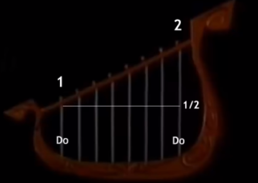

Pitágoras y su Aporte a la Humanidad
Pitágoras y la Música
Música

Pitágoras y la Música
Pitágoras fue el descubridor de las notas musicales, de la armonía y las aplicó a los instrumentos musicales cuando se percató de que las notas emitidos por una cuerda que vibra eran proporcionales a su longitud, de manera que si, por ejemplo, la cuerda se reduce a la mitad, la nota tiene un sonido más agudo, pero armónico. Esto lo llevó a aplicar la aritmética al estudio de los sonidos, pues, de acuerdo a las proporciones numéricas del largo de las cuerdas variaban las notas. Así se dice que inventó un instrumento musical llamado monocordio.
La música era muy importante en la academia pitagórica, porque se decía que ayudaba a curar los enfermos y a vivir una vida más tranquila. En este video se pueden ver las explicaciones de Pitágoras y la Música: https://www.youtube.com/watch?v=GxjtIoDpSWk&t=56s
- Actividad No. 7 Preguntas para Lectura Activa
-
- ¿Qué aspecto de la música descubrió?
- ¿Por qué aplicó la aritmética a la música?
- ¿Por qué era importante la música para los pitagóricos?
Obra publicada con Licencia Creative Commons Reconocimiento Compartir igual 4.0